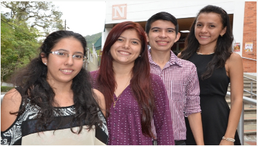

- 
Desde hace varios años, San José de Cúcuta se ha destacado por poseer talento humano sobresaliente en lo que se refiere a la generación de emprendimiento con base tecnológica en el país. Ejemplo claro, es esta iniciativa conformada por cuatro estudiantes de la Universidad Francisco de Paula Santander (UFPS), que decidieron unirse y crear una herramienta novedosa para encontrar el plan adecuado, celebrar y compartir en esas fechas especiales. Jefferson Ferney Jaramillo Vega y Valeria Gabriela Salazar Delgado, los dos de Ingeniería en Sistemas, junto a Karen Andrea Monsalve Quintero y Yordana del Pilar Cacua Fernández, de Administración de Empresas, se unieron hace más de un año para dar forma a este innovador modelo de negocio digital llamado Te Tengo Presente.“La idea nació a partir de una experiencia personal, debido a que le quise celebrar el cumpleaños a mi mejor amiga y me fue muy difícil organizarlo. En ese momento me cuestioné y pensé que debería haber alguien que me pudiera ayudar a realizarlo y me brindara alternativas, donde simplemente se eligiera el lugar y el plan para compartir con mis seres queridos”, explicó Jefferson Ferney Jaramillo Vega, líder del emprendimiento.Por eso emerge Te Tengo Presente, aplicativo digital donde a un clic de distancia, se pueden encontrar las mejores alternativas para compartir experiencias inolvidables en esas fechas especiales. En la actualidad, cuentan con varios paquetes entre los que se destacan, el plan romántico y para amigos, la tienda de detalles, decoraciones para cenas y habitaciones.“Tenemos planes desde $25.000 en adelante, según la ocasión que se vaya a celebrar, con la seguridad que nuestros usuarios disfrutarán estos momentos agradables que jamás olvidarán”, afirmó Jefferson Ferney.
Apps.co-Ufps